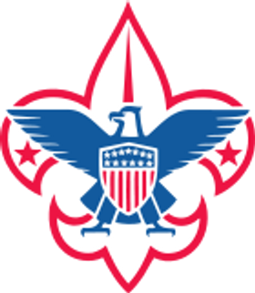
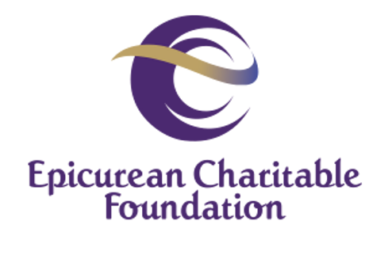
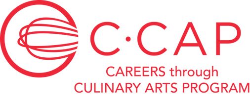
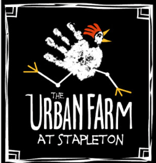

I strongly believe in the importance of giving back. Here's where I've spent my time.

Assistant Scoutmaster for Scouts BSA Troop 502 for over a year, leading and mentoring young men. Also served as Eagle Project Coordinator for 3 years, helping youth achieve Eagle Scout through community service projects.

An organization of food, beverage, and hospitality executives providing scholarships and mentorship to students pursuing careers in hospitality or culinary arts. I led planning and execution of Avero's involvement, including scholarship selection and NYC trip coordination.

An organization providing culinary training, career advising, and scholarships to break the cycle of poverty. I led Avero's involvement including scholarship parameters, winner selection, and NYC scholarship trips.

A community garden at Stapleton enabling needy families to grow vegetables and interact with farm animals for therapeutic purposes.
A non-profit distributing over 50 tons of food weekly to struggling Denver Metro families. I researched philanthropic organizations for fundraising and helped distribute food to pantries during the holidays.
A non-profit serving Douglas and Elbert counties, Colorado. I organized and led crews for major facility alterations.
The Rocky Mountain region's treatment center and K-12 school for emotionally and crisis-affected children and youth experiencing abuse and neglect.
A facility-based, multidisciplinary program addressing child abuse investigations and treatment. I helped raise thousands for annual charity events and generated community awareness.